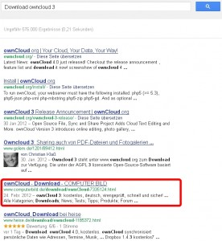

Vor Kurzem ist Owncloud 4 erschienen und ich spiele momentan damit rum. Allerdings klappt einiges nicht, ich bekomme immer wieder die Fehlermeldung:
{% highlight text %} File does not exist: /var/www/owncloud/files/ajax, referer: http://owncloud.domain.de/?app=files {% endhighlight %}Und tatsächlich existiert die Datei ajax in dem angegebenem Pfad nicht. Also dachte ich mir, haben die Entwickler diese Datei eventuell beim Update vergessen. Dann ziehe ich sie mir halt aus dem letzten Release. Leider kann man das auf der Webseite von Owncloud nicht bekommen, hier kann man sich nur das letzte Stable Release und das neuste Entwicklerrelease herunterladen. Also habe ich mal frech nach Download Owncloud 3 gegoogelt und nicht schlecht gestaunt, als mir die Computerbild als eines der ersten Ergebnisse angezeigt wurde. Mit erfolgsversprechender Beschreibung sogar! Da ich schon bei WinSetupFromUSB die Erfahrung gemacht habe, dass Computerbild die veraltete Software zum Download anbietet, war ich hoffnungsvoll.

Deswegen klickte ich fix auf das Suchergebnis, kam auch tatsächlich auf eine Downloadseite, die Owncloud in der Version 3 beschrieb und lud mir die 344 KB große Datei runter.
Aber natürlich hatte ich die Rechnung ohne die Tatsache, dass der Download von Computerbild kommt gemacht. Als ich das Archiv öffnete, staunte ich nicht schlecht:
Bilder! In dem Archiv sind BILDER! Von einem Owncloudartikel zwar, aber nichtsdestotrotz absolut nutzlos. Die eigentliche Software lässt sich nirgends finden. SO eine Qualität bin ich von allem, was den Namen BILD enthält gewohnt. Danke, Computerbild, dass du mich nicht enttäuscht hast!
PS: Ich habe den Link zum Owncloud 3 Download dann bei Ubuntuusers gefunden. Die Datei liegt etwas versteckt noch auf den Owncloud Servern. Das Problem meiner Fehlermeldung konnte ich damit zwar beheben, aber viel besser funktioniert Owncloud 4 trotzdem noch nicht.
{kind=link}
{kind=link}